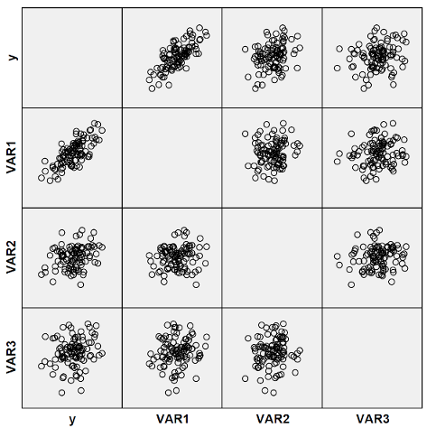
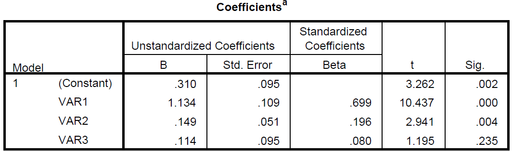

STAT 301
Lab 11: Multiple Linear Regression
T.A.: Yixuan Qiu
Multiple Linear Regression
- Multiple linear regression is a generalization to simple linear regression
- One Response v.s. multiple predictors
- $y=\beta_0+\beta_1x_1+\beta_2x_2+\cdots+\beta_px_p+\varepsilon$
Scatterplot Matrix
- A convenient way to draw scatterplots for many variables
- Each cell is a scatterplot for the two corresponding variables 
Fitting the Model
- Model summary

- Coefficients 
Fitting the Model
- ANOVA

Refine the Model
- Drop insignificant variables

- $R^2$ not decreasing much
- Before: 0.581; After: 0.575
- Std. error not increasing much
- Before: 0.93273; After: 0.93478
Prediction and residual
- Using the regression equation to do prediction
$\hat{y}=0.302+1.151*Var1+0.155*Var2$
- Residual = True value - predicted value
- Look into original data to find the true value
- Use the predicted value above
To Save Time
- Use scatterplot matrix instead of many scatterplots
- Do not spend more than 6 minutes on # 1
- http://statr.me/courses.html